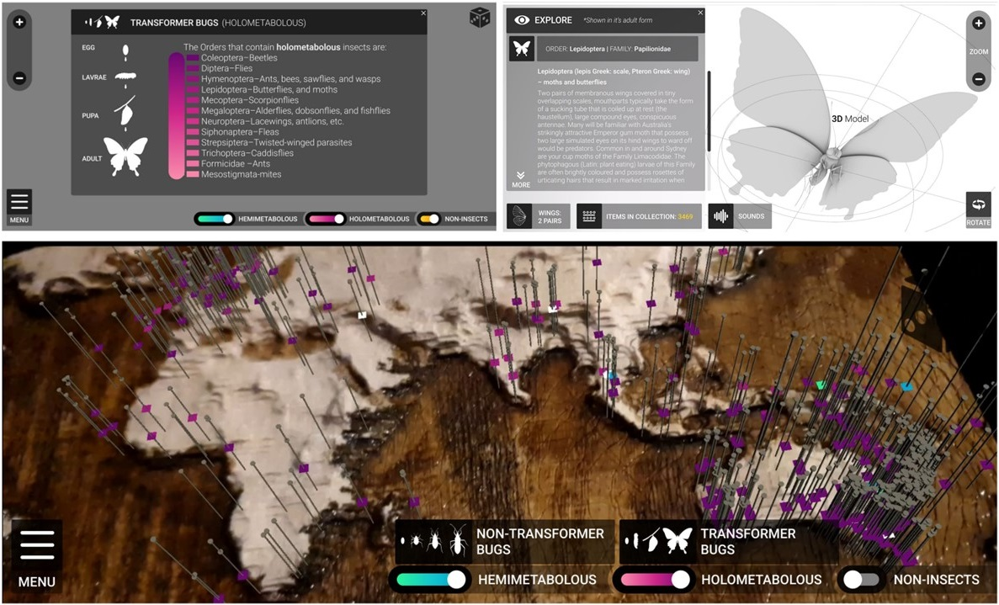
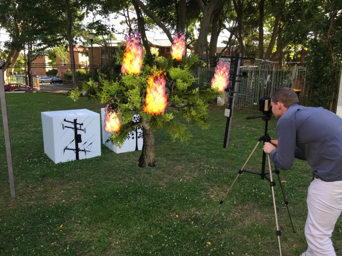

For this project, I worked with my team as a researcher and designer where we took a co-design approach taken for designing a web-based and smartphone-augmented reality (AR) application (app) for a local museum exhibit to display visualisations of geo-located data for entomology specimens. The AR app allows visitors to spatially visualise insect specimens in-situ and view more detailed information through their own devices. The design of the app was guided by continuous input from curators of the museum to ensure it met their requirements.
Teammates: Anastasia Globa and Jude Philp
Callum Parker BComp, PhD
Lecturer in Interaction Design.
Projects
Big Data Bugs - Investigating the Design of Augmented Reality Applications for Museum Exhibitions

Snowballz - Personalised Virtual Reality Exergame

Exercise is essential for health and well-being. However, it can be difficult for people to meet the recommended amount of daily exercise simply due to the lack of motivation. Virtual reality games, even though they were not explicitly designed for exercise, have the potential to provide enough exercise to achieve recommended levels of activity for a day while keeping people motivated. However, as these games have not generally not been designed for exercise, there is a risk that people may either under- or over-exert themselves. Therefore, I worked on a team to design and develop a virtual reality exergame called Snowballz, which utilises a user model and dynamic difficulty adjustment (using the player’s snowball throwing accuracy and heart-rate) to deliver an ever changing level intensity according to the player’s energy and performance.
Teammates: Soojeong Yoo and Judy Kay
VRun - Running on the Spot Locomotion in Virtual Reality

Exercise is important for health and well-being. However, for some people it can be hard to find the time or motivation to get the recommended amount every day. Exergames on modern gaming consoles have demonstrated potential in addressing this problem, by helping people stay motivated and this has benefited their health. Fully-immersive virtual reality has also demonstrated effectiveness at keeping people motivated in areas such as education. However, these systems lack portability and convenience. I worked as a designer and developer of VRun, which allows the user to physically run through a virtual world, with activity detected through the smartphone’s accelerometer and mapped to virtual movement. Three different modes of VRun were evaluated (different levels of immersion) by Dr Soojeong Yoo to gain insights into the immersion experienced in each condition. This provides a foundation for designing VR exergames.
Teammates: Soojeong Yoo and Judy Kay
Pop-spot
This research project was part of a large study exploring digitally augmented popups. I worked as part of a transdisciplinary research team including an urban planner, architect, electrical engineer, interaction
designer and computer scientist. As the study took place at the University of Sydney campus, we focused the engagement context around transport
infrastructure to and from campus. This ensured that the engagement
topic was relevant to the local community. It was further loosely linked
to an initiative at our university concerned with active transport on
campus. We consequently developed our engagement strategy to encourage people to stop and vote, provide feedback, and express their
opinions about transport infrastructure on and around the campus through a collection of interactive modules, including a touchscreen transit information screen, a selfie voting app (vote with the transport option you took to university), a chalkboard, and a chalk drawing robot (tallying the votes from live tweets to our popup's Twitter hashtag).
Teammates: Joel Fredericks, Dawei Zhou, Charlie Li and Martin Tomitsch
Augmented Reality Tree Trimming Awareness Game

This game was developed using the Unity Game Engine with the Vuforia library for Android. This was a component for a community engagement popup for Ausgrid (a local power company) to raise awareness about tree trimming.
I created a video see-through head mounted display (or in this case tripod mounted display) which people could look through to see augmented content. The white boxes as shown in the photo are AR markers, one for the 3D tree and the other for the 3D powerlines. If they are too close together then the tree catches fire.
The game is played with one person looking through the headset and the other moving the marker boxes under the guidance of the person using the headset.
Teammates: Joel Fredericks
HIVE - A Public Display with Augmented Reality Assisted Personalisation
Hive featured a custom developed digital community noticeboard on a 50-inch widescreen public display. It contained content that featured local news, items for sale, and property rentals. Users could engage with the content directly on-screen or through a custom developed smartphone augmented reality (AR) app. The app had two distinct features, overlay and remote control. The overlay allowed users to see personalised content overlaid on the display, based on a user profile containing user preferences stored in the app. The remote control feature enabled users to control the display by performing swipe gestures on the display through their smartphone's camera feed. The eventual study with this prototype was held in a public space, nearby a University cafeteria and common area.
The goal of this work was to evaluate the effectiveness of AR assisted personalisation with public displays.
Teammates: Martin Tomitsch, Judy Kay and Matthias Baldauf
Tweet Wall

We designed and implemented a public display application that allows people to navigate between Twitter feeds and to find details about particular tweets. The application supports selection and navigation through point-and-dwell and push and grab-and-pull. A within-subject evaluation with 10 participants found that although point-and-dwell was perceived to be more accurate, push was preferred for selecting items and grab-and-pull was preferred for navigation. Based on our findings we derive recommendations for designing gesture-based information displays.
Teammates: Soojeong Yoo, Judy Kay and Martin Tomitsch
Molypoly

Currently, first-year chemistry students at the University of Tasmania learn about three-dimensional molecular structures using a combination of lectures, tutorials, and practical hands-on experience with molecular chemistry kits. We have developed a basic 3D molecule construction simulation, called MolyPoly, to help students grasp the concepts of chemistry easily through immersion and natural interaction with 3D molecules. It was designed to augment the teaching of organic chemistry with enhanced natural interaction and 3D visualization techniques. This paper presents the results of a pilot study conducted with the aforementioned chemistry class. Participating students were split into two groups; MolyPoly and traditional. The results demonstrated that the two groups have achieved similar learning outcomes at the end of the four (4) class sessions.
Teammates: Soojeong Yoo, Winyu Chinthammit and Susan Turland